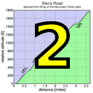
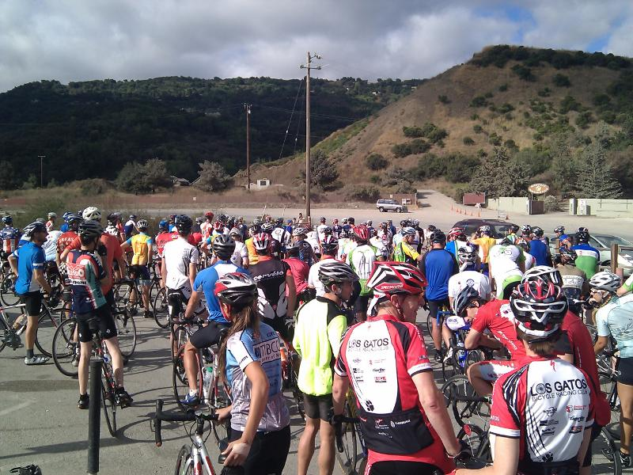

|
 |
|  |
| The group prepares to depart. (Pat Parseghian) |
It's the first Saturday in October, and that means the Low-Key Hillclimb series has begun!
Over 120 riders (somewhat less than RSVP'ed...) climbed Montebello today as the faintest threat of rain yielded to Low-Key sunshine for perfect climbing conditions on the mountain. And proving he's still ready to rumble, Low-Key Mega-Legend Multi-Champion Tracy Colwell was first to appear at the finish, taking the men's division convincingly. Morgan Stanley super-climber Harlan Chapman was second, leading Pen Velo's Murray Swanson for third. Helen Cadabona led Janet Martinez and Kim Mygatt in a strong women's field of thirteen riders.
There were some noteworthy junior results. Justin Leong finished with a ferocious sprint to lead the junior competition, while Skyler Colwell, after breaking the hour last year, came close to the 50-minute range with a fantastic 50:37, knocking 9:16 off his time from last year.
On the team side, racing club Pen Velo is just barely ahead of The Brown Zone (please don't ask), Santa Cruz's Bike Trip, and traditional Low-Key Super-Power Western Wheelers. But it's very, very close with seven teams scoring at least 330 points.
Thanks to our great group of volunteers and to all who came out to open the 2011 series with such a wonderful success!
Strava T-shirt qualifiers indicated with orange background.
| pl | # | name | team | cat | time | mph | fph | score |
|---|---|---|---|---|---|---|---|---|
| 1 | 48 | Tracy Colwell | Team Colwell | 40+ | 27:08 | 11.72 | 4290 | 132.03 |
| 2 | 43 | Harlan H. Chapman | Morgan Stanley Smith Barney Specialized | 50+ | 27:33 | 11.54 | 4225 | 130.04 |
| 3 | 140 | Murray Swanson | Pen Velo/Pomodoro | 40+ | 27:49 | 11.43 | 4185 | 128.79 |
| 4 | 88 | Andrew Juiliano | 20+ | 28:28 | 11.17 | 4089 | 125.85 | |
| 5 | 106 | McLovin | The Brown Zone | 1 | 28:57 | 10.98 | 4021 | 123.75 |
| 6 | 114 | Steve Peck | Silicon Valley Triathlon | 45+ | 29:01 | 10.96 | 4011 | 123.46 |
| 7 | 59 | Mark Edwards | Bike Trip/Symantec | 50+ | 29:02 | 10.95 | 4009 | 123.39 |
| 8 | 44 | Tim Clark | Low-Key | 40+ | 29:11 | 10.90 | 3989 | 122.76 |
| 9 | 152 | Ben Weir | 30+ | 29:28 | 10.79 | 3950 | 121.58 | |
| 10 | 144 | Nils Tikkanen | Bike Trip/Symantec | Honey Badger | 29:39 | 10.73 | 3926 | 120.83 |
| 11 | 63 | Joe Fant | San Jose Bike Club | 50+ | 29:50 | 10.66 | 3902 | 120.08 |
| 12 | 113 | Christian Paquet | Doogie | 29:52 | 10.65 | 3897 | 119.95 | |
| 13 | 74 | Rich Hill | LGBRC | 45+ | 29:53 | 10.64 | 3895 | 119.88 |
| 14 | 133 | Dai Sieh | The Brown Zone | Robusto | 29:57 | 10.62 | 3886 | 119.62 |
| 15 | 53 | J.D. Daniels | Eden Bikes | 35+ | 30:08 | 10.55 | 3863 | 118.89 |
| 16 | 80 | Martin Hyland | Western Wheelers | 55+ | 30:24 | 10.46 | 3829 | 117.85 |
| 17 | 78 | Tick Houk | The Brown Zone | 50+ | 30:30 | 10.43 | 3816 | 117.46 |
| 18 | 96 | Bennett Chi Lee | Speedy Bees | 45+/Ponytail | 30:45 | 10.34 | 3785 | 116.50 |
| 19 | 37 | Ronald Brunner | The Brown Zone | Low-Key | 30:59 | 10.26 | 3757 | 115.63 |
| 20 | 33 | Bill Brier | Team Fremont FFBC p/b Chipotle | 45+ | 31:10 | 10.20 | 3735 | 114.95 |
| 21 | 79 | Jared Hudson | Mission Cycling | 30+ | 31:23 | 10.13 | 3709 | 114.15 |
| 22 | 94 | Jim Langley | Bike Trip/Symantec | 55+ | 31:31 | 10.09 | 3693 | 113.67 |
| 23 | 61 | Steven Enns | 31:39 | 10.05 | 3678 | 113.19 | ||
| 24 | 124 | Dave Rossow | 40+ | 31:50 | 9.99 | 3657 | 112.54 | |
| 25 | 117 | Bill Preucel | Sr's & Mr's of No Mercy | 45+ | 31:59 | 9.94 | 3639 | 112.01 |
| 26 | 64 | TOM FERREIRA | Eden Bikes | 45+ | 31:59 | 9.94 | 3639 | 112.01 |
| 27 | 66 | Klaus Fleischmann | 40= | 32:11 | 9.88 | 3617 | 111.32 | |
| 28 | 112 | Shance Ordell | Western Wheelers | 35+ 123 | 32:15 | 9.86 | 3609 | 111.09 |
| 29 | 70 | Bruce Gardner | Sr's & Mr's of No Mercy | 40+ | 32:19 | 9.84 | 3602 | 110.86 |
| 30 | 82 | Greg Imwalle | 30+ | 32:32 | 9.77 | 3578 | 110.12 | |
| 31 | 105 | Russ McCrary | Sr's & Mr's of No Mercy | 50+ | 32:33 | 9.77 | 3576 | 110.06 |
| 32 | 104 | Scott Martin | Bike Trip/Symantec | 50+ | 32:34 | 9.76 | 3574 | 110.01 |
| 33 | 85 | George Janour | Bike Trip/Symantec | 40+ | 32:42 | 9.72 | 3560 | 109.56 |
| 34 | 34 | Adam Brinkman | 30+ | 32:43 | 9.72 | 3558 | 109.50 | |
| 35 | 52 | Rob Cosaro | Doogie | 50+ | 32:49 | 9.69 | 3547 | 109.17 |
| 36 | 156 | Matt Wocasek | Bike Trip/Symantec | 45+ | 32:51 | 9.68 | 3543 | 109.06 |
| 37 | 27 | Sam Beal | Chain Reaction | 60+ | 32:53 | 9.67 | 3540 | 108.95 |
| 38 | 95 | Dean Larson | The Brown Zone | 45+ | 33:05 | 9.61 | 3518 | 108.29 |
| 39 | 122 | Doug Reynolds | Alberto's Steak House | 60+ | 33:16 | 9.56 | 3499 | 107.69 |
| 40 | 20 | Ron Abidog | 40+ | 33:29 | 9.50 | 3476 | 106.99 | |
| 41 | 127 | Naoto Sato | 45+ | 33:40 | 9.45 | 3457 | 106.41 | |
| 42 | 92 | KP | The Brown Zone | None Of Your Bee'S Wax | 34:12 | 9.30 | 3404 | 104.75 |
| 43 | 136 | Frederick Stamm | Pen Velo/Pomodoro | 55+ | 34:13 | 9.29 | 3402 | 104.70 |
| 44 | 143 | Phil Theodore | Will Ride For Chocolate | 45+ | 34:14 | 9.29 | 3400 | 104.65 |
| 45 | 32 | Dan Brehmer | SLACer | 45+ | 34:57 | 9.10 | 3330 | 102.50 |
| 46 | 81 | Brandon Iles | 25+ | 34:57 | 9.10 | 3330 | 102.50 | |
| 47 | 121 | Carlos Reyes | 20+ | 35:08 | 9.05 | 3313 | 101.97 | |
| 48 | 103 | Bogdan Marian | 30+ | 35:21 | 9.00 | 3293 | 101.34 | |
| 49 | 87 | Dane Johnson | 25+ | 35:35 | 8.94 | 3271 | 100.68 | |
| 50 | 97 | Justin Leong | San Jose Bike Club | Junior | 35:43 | 8.90 | 3259 | 100.30 |
| 51 | 24 | MichaelsJ. Andalora | 55+ | 35:44 | 8.90 | 3257 | 100.26 | |
| 52 | 148 | David Vrane | Sr's & Mr's of No Mercy | 45+ | 35:48 | 8.88 | 3251 | 100.07 |
| 53 | 65 | Greg Finley | 30+ | 35:51 | 8.87 | 3247 | 99.93 | |
| 54 | 158 | Udi Yuhjtman | 50+ | 35:56 | 8.85 | 3239 | 99.70 | |
| 55 | 153 | Jim Williams | Alberto's Steak House | 60+ | 35:59 | 8.84 | 3235 | 99.56 |
| 56 | 30 | George Bonanto | 30+ | 35:59 | 8.84 | 3235 | 99.56 | |
| 57 | 83 | Tim Irvine | LGBRC | 40+ | 36:04 | 8.82 | 3227 | 99.33 |
| 58 | 120 | Vinay Ravuri | Georgia Tech | 36:04 | 8.82 | 3227 | 99.33 | |
| 59 | 134 | Peter Smith | 55+ | 36:06 | 8.81 | 3224 | 99.24 | |
| 60 | 67 | Boris Foelsch | Monta Vista Velo | 45+ | 36:10 | 8.79 | 3218 | 99.06 |
| 61 | 51 | Richard Contreras | Team Rhus | 50+ | 36:22 | 8.74 | 3201 | 98.51 |
| 62 | 107 | Scott Mellberg | KTCC | 50+ | 36:26 | 8.73 | 3195 | 98.33 |
| 63 | 132 | Jeff Shute | 30+ | 36:29 | 8.72 | 3190 | 98.20 | |
| 64 | 149 | Rick Wallace | KTCC | 50+ | 36:32 | 8.70 | 3186 | 98.06 |
| 65 | 35 | Nic Brummell | Atlas | 50+ | 36:48 | 8.64 | 3163 | 97.35 |
| 66 | 55 | Jon Degenhardt | ACTC | 50+ | 36:59 | 8.60 | 3147 | 96.87 |
| 67 | 93 | Romain Laboisse | 35+ | 37:15 | 8.54 | 3125 | 96.17 | |
| 68 | 21 | Detlef Adam | Bike Trip/Symantec | 45+ | 37:23 | 8.51 | 3114 | 95.83 |
| 69 | 108 | Paul Melville | Doogie | 60+ | 37:36 | 8.46 | 3096 | 95.28 |
| 70 | 111 | Robert Navsca | Pedalista | 40+ | 37:42 | 8.44 | 3088 | 95.03 |
| 71 | 42 | Steve Chapel | Western Wheelers | 65+ | 37:57 | 8.38 | 3067 | 94.40 |
| 72 | 151 | Sterling Watson | 50+ | 37:58 | 8.38 | 3066 | 94.36 | |
| 73 | 57 | Frank Drobot | 60+ | 38:07 | 8.34 | 3054 | 93.99 | |
| 74 | 115 | Ryan Powell | Team Joe Karbowski | 35+ | 38:09 | 8.34 | 3051 | 93.91 |
| 75 | 31 | Mark Boolootian | Bike Trip/Symantec | 50+ | 38:11 | 8.33 | 3048 | 93.82 |
| 76 | 76 | Jerry Hitchcock | Spike the Wonder Dog | 55+ | 38:18 | 8.30 | 3039 | 93.54 |
| 77 | 41 | Jorge Chang | 35+ | 38:25 | 8.28 | 3030 | 93.25 | |
| 78 | 38 | Patrick Callahan | Buttered Muffins | 40+ | 38:33 | 8.25 | 3019 | 92.93 |
| 79 | 145 | Bruno Tourette | Palo Verde Velo | 35+ | 38:45 | 8.21 | 3004 | 92.45 |
| 80 | 102 | Yukon M | 40+ | 39:05 | 8.14 | 2978 | 91.66 | |
| 81 | 150 | Andrew Watson | KTCC | Junior 15-16 | 39:20 | 8.08 | 2959 | 91.08 |
| 82 | 12 | Will von Kaenel | LGBRC | 50+ | 43:31 | 7.31 | 2675 | 90.94T |
| 83 | 28 | Jan Berka | 45+ | 39:56 | 7.96 | 2915 | 89.71 | |
| 84 | 141 | Stefan Tamme | Western Wheelers | 40+ | 40:08 | 7.92 | 2900 | 89.26 |
| 85 | 36 | Rich Brunner | Santa Clara | 40+ | 40:34 | 7.84 | 2869 | 88.31 |
| 86 | 84 | Tom Jakaby | Buycell | 50+ | 40:39 | 7.82 | 2863 | 88.13 |
| 87 | 89 | Rich Karlgaard | Western Wheelers | 55+ | 40:49 | 7.79 | 2852 | 87.77 |
| 88 | 130 | Jeffrey Schwardt | Palo Verde Velo | 45+ | 40:59 | 7.76 | 2840 | 87.41 |
| 89 | 50 | Miles Contreras | Team Rhus | 15+ | 41:05 | 7.74 | 2833 | 87.20 |
| 90 | 68 | Stephen Fong | San Jose Bike Club | 5 | 41:18 | 7.70 | 2818 | 86.74 |
| 91 | 54 | Barry Burr | Barry Beams Bike Lighting | 50+ | 41:22 | 7.69 | 2814 | 86.60 |
| 92 | 160 | Craig Peters | Tradewinds Cycling Team | 40+ | 41:29 | 7.67 | 2806 | 86.36 |
| 93 | 46 | Kevin Colagiovanni | Team DUD | 25+ | 42:19 | 7.51 | 2751 | 84.66 |
| 94 | 98 | Simon Leong | San Jose Bike Club | 45+ | 42:59 | 7.40 | 2708 | 83.35 |
| 95 | 49 | John Conklin | 40+ | 43:34 | 7.30 | 2672 | 82.23 | |
| 96 | 142 | Peter Thana | 35+ | 43:44 | 7.27 | 2662 | 81.92 | |
| 97 | 128 | Wink Saville | 60+ | 44:04 | 7.22 | 2641 | 81.30 | |
| 98 | 146 | Luis Valente | Palo Verde Velo | 50+ | 44:30 | 7.15 | 2616 | 80.51 |
| 99 | 118 | Alec Proudfoot | 45+ | 45:17 | 7.02 | 2570 | 79.11 | |
| 100 | 154 | Bryan Wilson | Palo Verde Velo | 50(!) | 45:57 | 6.92 | 2533 | 77.97 |
| 101 | 22 | Michael Ahern | LGBRC | 45+ | 46:51 | 6.79 | 2485 | 76.47 |
| 102 | 72 | Sampath Gomatam | 40+ | 47:11 | 6.74 | 2467 | 75.93 | |
| 103 | 29 | Sachin Bhatia | 30+ | 48:08 | 6.61 | 2418 | 74.43 | |
| 104 | 155 | Colin Wilson | Tribe | 50+ | 48:26 | 6.57 | 2403 | 73.97 |
| 105 | 135 | Jeffrey Schwardt | Team Pie! | 45+ | 50:09 | 6.34 | 2321 | 71.44 |
| 106 | 47 | Skyler Colwell | Team Colwell | Junior | 50:37 | 6.28 | 2300 | 70.78 |
| 107 | 56 | Alex Diaz | Team DUD | 25+ | 50:44 | 6.27 | 2294 | 70.61 |
| 108 | 45 | John Clarke | 40+ | 51:32 | 6.17 | 2259 | 69.52 |
| pl | # | name | team | cat | time | mph | fph | score |
|---|---|---|---|---|---|---|---|---|
| 1 | 40 | Helen Casabona | Pen Velo/Pomodoro | 50+ | 33:56 | 9.37 | 3430 | 127.66 |
| 2 | 8 | Janet Martinez | Sr's & Mr's of No Mercy | 40+ | 35:12 | 9.03 | 3307 | 123.07 |
| 3 | 110 | Kim Mygatt | 45+ | 35:22 | 8.99 | 3291 | 122.49 | |
| 4 | 75 | Laura Hipp | Western Wheelers | 4 | 36:08 | 8.80 | 3221 | 119.89 |
| 5 | 137 | Laura Stern | Coretechs Cycling Team | 50+ | 36:13 | 8.78 | 3214 | 119.61 |
| 6 | 131 | Lynn Sestak | San Jose Bike Club | 50+ | 37:01 | 8.59 | 3145 | 117.03 |
| 7 | 157 | Jamie Yang | 25+ | 39:02 | 8.15 | 2982 | 110.98 | |
| 8 | 62 | Lori Fabris | Plus 3 | 50+ | 39:37 | 8.03 | 2938 | 109.35 |
| 9 | 60 | Lisa Emmerich | Sr's & Mr's of No Mercy | 50+ | 44:32 | 7.14 | 2614 | 97.27 |
| 10 | 13 | Lynn von Kaenel | LGBRC | 43:31 | 7.31 | 2675 | 90.94T | |
| 11 | 161 | Dawn Adams | LGBRC | 40+ | 49:03 | 6.48 | 2373 | 88.32 |
| 12 | 77 | Christine Holmes | Low-Key | 45+ | 54:53 | 5.79 | 2121 | 78.93 |
| pl | team | score | riders |
|---|---|---|---|
| 1 | Pen Velo/Pomodoro | 361.15 | Murray Swanson, Helen Casabona, Frederick Stamm |
| 2 | The Brown Zone | 360.82 | McLovin, Dai Sieh, Tick Houk, Ronald Brunner, Dean Larson, KP |
| 3 | Bike Trip/Symantec | 357.89 | Mark Edwards, Nils Tikkanen, Jim Langley, Scott Martin, George Janour, Matt Wocasek, Detlef Adam, Mark Boolootian |
| 4 | Western Wheelers | 348.82 | Martin Hyland, Shance Ordell, Laura Hipp, Steve Chapel, Stefan Tamme, Rich Karlgaard |
| 5 | Sr's & Mr's of No Mercy | 345.93 | Bill Preucel, Bruce Gardner, Russ McCrary, Janet Martinez, David Vrane, Lisa Emmerich |
| 6 | San Jose Bike Club | 337.41 | Joe Fant, Justin Leong, Lynn Sestak, Stephen Fong, Simon Leong |
| 7 | Doogie | 324.40 | Christian Paquet, Rob Cosaro, Paul Melville |
| 8 | 313.30 | Greg Imwalle, Brandon Iles, Dane Johnson, George Bonanto, Jeff Shute, Wink Saville, Alec Proudfoot, John Clarke | |
| 9 | LGBRC | 310.15 | Rich Hill, Tim Irvine, Will von Kaenel, Lynn von Kaenel, Michael Ahern, Dawn Adams |
| 10 | KTCC | 287.47 | Scott Mellberg, Rick Wallace, Andrew Watson |
| 11 | Palo Verde Velo | 260.37 | Bruno Tourette, Jeffrey Schwardt, Luis Valente, Bryan Wilson |
| 12 | Eden Bikes | 230.90 | J.D. Daniels, TOM FERREIRA |
| 13 | Alberto's Steak House | 207.25 | Doug Reynolds, Jim Williams |
| 14 | Team Colwell | 202.81 | Tracy Colwell, Skyler Colwell |
| 15 | Low-Key | 201.69 | Tim Clark, Christine Holmes |
| 16 | Team Rhus | 185.71 | Richard Contreras, Miles Contreras |
| 17 | Team DUD | 155.27 | Kevin Colagiovanni, Alex Diaz |
| 18 | Morgan Stanley Smith Barney Specialized | 130.04 | Harlan H. Chapman |
| 19 | Silicon Valley Triathlon | 123.46 | Steve Peck |
| 20 | Coretechs Cycling Team | 119.61 | Laura Stern |
| 21 | Speedy Bees | 116.50 | Bennett Chi Lee |
| 22 | Team Fremont FFBC p/b Chipotle | 114.95 | Bill Brier |
| 23 | Mission Cycling | 114.15 | Jared Hudson |
| 24 | Plus 3 | 109.35 | Lori Fabris |
| 25 | Chain Reaction | 108.95 | Sam Beal |
| 26 | Will Ride For Chocolate | 104.65 | Phil Theodore |
| 27 | SLACer | 102.50 | Dan Brehmer |
| 28 | Georgia Tech | 99.33 | Vinay Ravuri |
| 29 | Monta Vista Velo | 99.06 | Boris Foelsch |
| 30 | Atlas | 97.35 | Nic Brummell |
| 31 | ACTC | 96.87 | Jon Degenhardt |
| 32 | Pedalista | 95.03 | Robert Navsca |
| 33 | Team Joe Karbowski | 93.91 | Ryan Powell |
| 34 | Spike the Wonder Dog | 93.54 | Jerry Hitchcock |
| 35 | Buttered Muffins | 92.93 | Patrick Callahan |
| 36 | Santa Clara | 88.31 | Rich Brunner |
| 37 | Buycell | 88.13 | Tom Jakaby |
| 38 | Barry Beams Bike Lighting | 86.60 | Barry Burr |
| 39 | Tradewinds Cycling Team | 86.36 | Craig Peters |
| 40 | Tribe | 73.97 | Colin Wilson |
| 41 | Team Pie! | 71.44 | Jeffrey Schwardt |